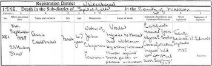
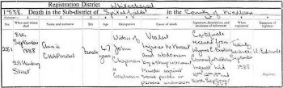
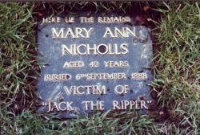
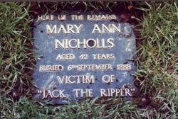
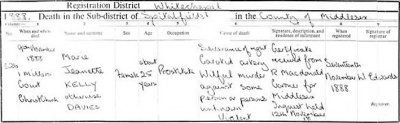
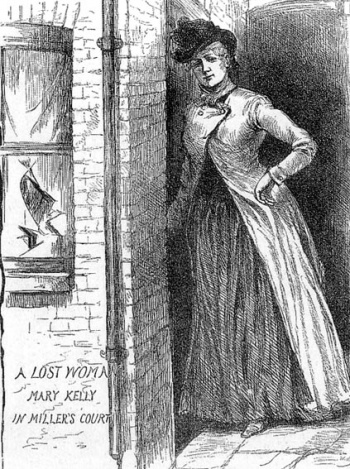
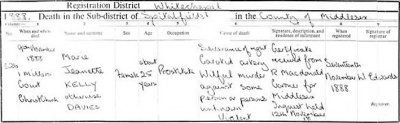
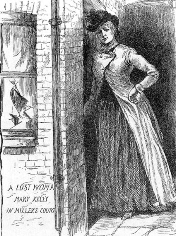

WELCOME TO RIPPER STREET
You are taken back to the 1800's where You are taken back to the 1800's where You are taken back to the 1800's where You are taken back to the 1800's where You are taken back to the 1800's where You are taken back to the 1800's where You are taken back to the 1800's where You are taken back to the 1800's where You are taken back to the 1800's where You are taken back to the 1800's where You are taken back to the 1800's where You are taken back to the 1800's where You are taken back to the 1800's where You are taken back to the 1800's where You are taken back to the 1800's where You are taken back to the 1800's where You are taken back to the 1800's where You are taken back to the 1800's where You are taken back to the 1800's where You are taken back to the 1800's where You are taken back to the 1800's where You are taken back to the 1800's where You are taken back to the 1800's where You are taken back to the 1800's where You are taken back to the 1800's where You are taken back to the 1800's where You are taken back to the 1800's where You are taken back to the 1800's where You are taken back to the 1800's where

 



 

 


